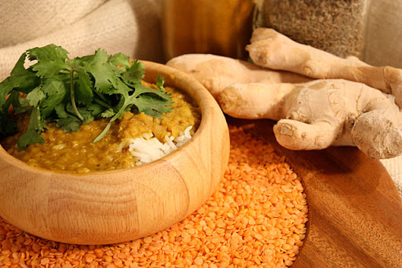
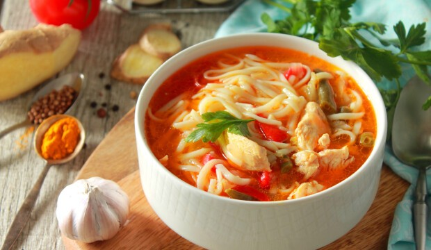
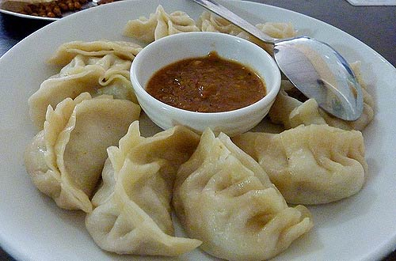
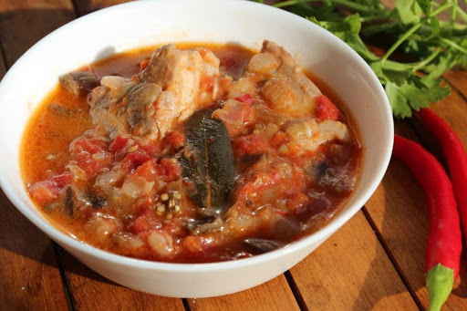
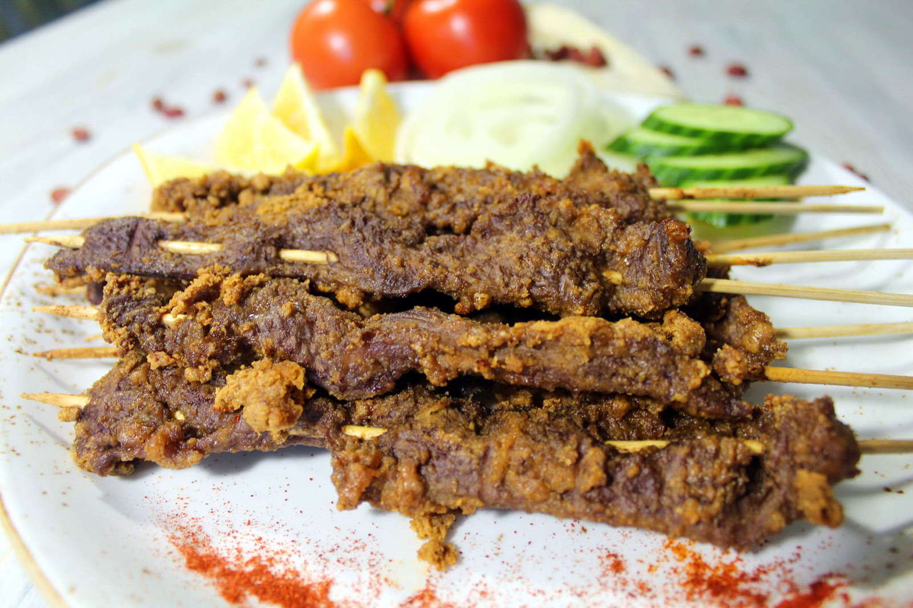

____
Традиционная еда
Дал (Dhal) — изначально индийский, густой суп-пюре из разваренных бобов (в основном, чечевица, маш, нут или голубиный горох) с добавлением пряностей и овощей. Подается с теплыми лепешками.

Тхукпа (Thukpa) — тибетский суп с лапшой, помидорами, капустой и специями.

Момо (Momo) — тибетские вареники с начинками. Их делают с фаршем из мяса яка, буйвола, курицы или козы, а также с капустой и сыром. Традиционно Момо едят во время праздников и особых случаев.

Джаша Мару (Jasha Maroo) — пряный куриный фарш, отваренный с помидорами и перцем чили. Подается с красным рисом.

Изэй шакам (Eezay shakam) — сушеная говядина с красным перцем чили.

____